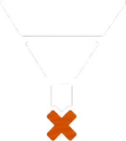
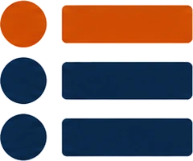
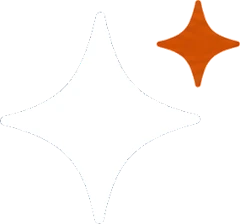
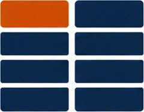

PROBLEM
施策は進めているが、
目標に届かない
- 01

目標数値に未達だが、
ボトルネックが何で、 どうすれば 改善するか 分からない - 02
広告、SEO、LLMO。
施策の優先順位も、 それぞれが 最適化できているかも 自信がない - 03
ベンダーごとに
レポートは届くが、 内容を理解しきれないまま 次の月に 進んでいる
SOLUTION
マーケティングの戦略から実務まで、
丸ごとお任せください
丸ごとお任せください
何に取り組み、どの順番で進め、成果をどう確かめるか。マーケティング部門が担う判断と実務を、ひとつの窓口で、必要な時に必要な分だけ対応します。施策ごとにベンダーを探し、説明を聞き、調整する手間はなくなります。
REASON
丸ごとお任せいただける、3つの理由
- 01
事業会社とベンダー、
マーケティングと営業 双方の経験による 一貫支援 代表・橋本が、事業会社とマーケティング支援会社の双方で、戦略立案から施策の意思決定・実行に関わり、リード獲得後の営業まで対応してきた経験を元に、数値のボトルネックが何かをともに解明し、改善に向けて伴走します。
- 02
AI活用による
運用・制作・ テクニカル領域の 効率化 広告運用、制作、SEO／LLMOのテクニカル領域は、AIと自社開発のツールで効率化しています。実務経験のあるエンジニアが社内にいるため、サイトの改修や構造化データなどの技術対応も内製で進められます。
自社プロダクト：HookHack（動画広告生成）、LPHack（LP制作・改修）
- 03
窓口ひとつで、
必要な施策を 必要な分だけ 戦略策定から実務まで、窓口はひとつです。施策ごとにベンダーを探し、説明を聞き、調整する必要はありません。貴社の体制や予算に合わせて、必要な施策をレ点でお選びいただけます。
PROCESS
現状把握から可視化まで、4つのステップで伴走
現状把握と方針のすり合わせ、優先順位、役割分担、可視化の4段で進めます。可視化した結果は
STEP01
3C分析と施策の現状から、
ボトルネックと 改善方針を すり合わせ 顧客・競合・自社の3C分析と、現状の施策の実施状況を照らし合わせます。Webでのリサーチに加え、貴社の営業・CS担当など顧客接点を持つ方の声をもとにニーズを把握し、競争環境と貴社のアセットを比較。現状の施策や課題をお伺いした上で、ボトルネックと改善の方針を提案し、すり合わせます。
STEP02

すり合わせた方針から、
タスクの 優先順位を整理 すり合わせた改善方針をもとに、取り組むタスクを洗い出し、事業への重要性も踏まえて
着手する順序を 整理します。 STEP03
タスクごとに
役割分担 広告運用、Web制作、SEO／LLMO、ホワイトペーパー制作、アウトバウンド営業など、整理したタスクごとに弊社と貴社の役割を分担します。貴社の体制に合わせて、必要な施策をレ点式でご依頼いただけます。
STEP04
ダッシュボードで
可視化し、 経営層・上長への レポートも スムーズに マーケティングの数値をKPIツリーに沿って並べ、どこがボトルネックになっているかを確認できるようにします。施策ごとに分かれていたレポートがひとつにまとまるため、経営層・上長への報告にもそのまま使えます。
LLMOにおいては狙うカテゴリ、ポジション、顧客の目的・課題ごとに、AI回答での見え方を確認します。引用率や言及率に加え、「狙った場面で紹介されているか」「意図した強みが伝わっているか」を捉え、
戦略と計測をつなぎます。 マーケティング数値KPIツリーに沿った各施策の数値とボトルネックLLMOAI回答での引用率・言及率、狙った場面での紹介、意図した強みの伝わり方売上82%目標比商談数74%目標比商談化率61%目標比AI回答での言及率38%KPIツリー
売上82% 商談数74% 受注率98% リード数104% 商談化率61%ボトルネック 単価96% 案件数100%AI回答での言及率（質問の種類別）
- カテゴリ32%
- ポジション71%
- 目的・課題18%
商談数と商談化率（月別）
LLM対応に求められること
AIは、担当の境目を越えて答えている
この流れのまま、LLMOにも対応します。3C分析で決めた強みがAIの答えでどう伝わっているかをダッシュボードで確かめ、必要な改善をほかのタスクと同じ優先順位の中で進めます。
顧客（AIに相談して選ぶ）
ひとつの答え

生成AIの回答複数の情報源をまとめて参照
- 自社サイト・LP制作会社
- 検索上位の記事SEO会社

比較・紹介メディア広告・PR会社- SNS・口コミSNS運用会社
各社は担当範囲を最適化。AIの答え全体を見る担当はいない
顧客はAIに相談して候補を絞るようになっています。AIは自社サイト、検索上位の記事、比較・紹介メディア、SNSをまとめて読み、ひとつの答えを返します。LLMOに求められているのは、施策ごとの部分最適ではなく、戦略で決めた強みがすべての接点で同じように伝わっているかを見ることです。
縦割りで起きること
- 自社サイト、LP、外部の記事で説明がそろわず、AIの紹介が狭くなったりぶれたりする
- 検索では上位なのに、AIの答えには出てこない場面を誰も見ていない
- 改善が必要な場所が他社の担当範囲にあり、手が止まる
LLM対応に求められること
- 戦略で決めた強みを、すべての接点で同じ言葉で伝える
- 顧客の課題ごとに、AI回答での見え方を確かめる
- ひとつの窓口で、必要な施策を選んで動かす
改善の例
- 困りごとから始まる質問で登場しない→課題別の記事やFAQ、導入事例を整備
- AIが対応範囲を狭く説明している→サービスページの記載や外部の紹介情報を見直す
PROFILE
代表紹介

橋本 圭司代表取締役
早稲田大学政治経済学部卒業後、大手通信会社で営業、事業企画を経験。Webコンサル会社へ転職した後、2018年にイラスト世界チャンピオンとともにDT合同会社を設立し、CMO着任。並行して事業会社・ベンダー双方での経験を生かし、様々な業種・規模の企業で事業企画・マーケティング・セールスまでのコンサルとして事業を推進。2024年にサムライスタイル株式会社を設立。
資料ダウンロード
施策を進める理由を説明する
3つのフレームワーク
3つのフレームワーク
施策の中身ではなく、順序の根拠が問われた時の対処法をまとめました。
- 事業戦略誰に、何を
- マーケティング戦略どこで、どの順番で
- 施策実行いつ、どのように
資料を受け取る
入力イメージです。送信はされません。
プライバシーポリシー
マーケティングの戦略から実務まで、
一度ご相談ください
相談する
一度ご相談ください